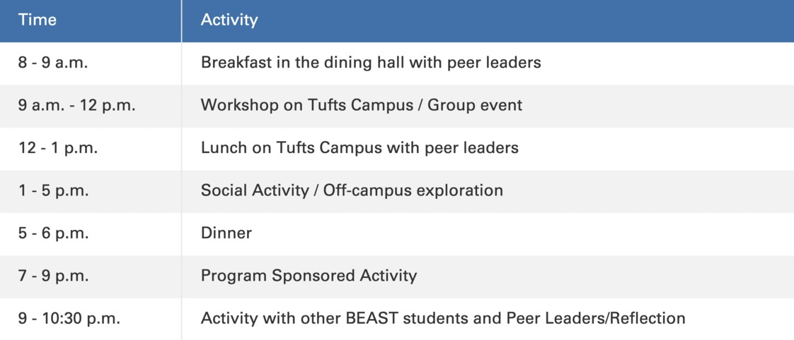

BEAST is a free 4-day Pre-Orientation program focusing on the unique social and cultural experiences specific to students who may be the 1st in their families to attend college and seeking guidance on financial and academic resources. We want to empower students who are first-generation college students, low-income, undocumented, or otherwise seek such a program.
*Activities may include exploring Boston and various modes of transport, a financial workshop, and a personalized in-depth discussion as a first generation low income (FGLI) student at Tufts
See a typical day of BEAST below
Guadalupe (she/her) is a rising Junior at Tufts from Chelsea, MA, majoring in Child Study and Human Development. Lupe has been part of BEAST for two summers: once as a first-year/BEASTie, later as a Peer Leader, and this summer she is super excited to help coordinate the pre-o! This year, she will also be the President of United for Immigrant Justice. In her free time, she enjoys watching movies, playing video games (especially the Last of Us or Cold War) and engaging in some arts and crafts with her little sister, Ashley
BLAST aims to develop a strong cohort of scholars from multiple backgrounds striving for academic excellence, active citizenship, and leadership. We support, develop, and retain students who may come from an under-resourced background or be the first in their family to attend a 4-year college.
"The FIRST Seminar was an incredible resource for me throughout the semester. It provided a space to come to every week where I knew I would feel safe, respected, and heard."
- Class of 2022
FIRST Seminar aims to support first year students transistioning into Tufts, while providing academic, professional, and personal developmental resources and opportunities. FIRST Seminar targets first-generation, low-income students.